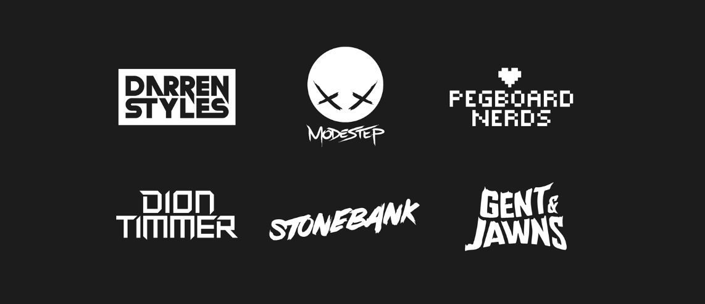

Numele "Uncaged" a fost inițial folosit de Monstercat ca parte a unei campanii de rebranding în mai 2017, după lansarea Monstercat 030 - Finale. Campania a cuprins o reproiectare a operelor de artă pentru compilațiile albumului și spectacole live live, albumele și concertele fiind marcate "Monstercat Uncaged". Primul album compilațional lansat după rebranding, Monstercat Uncaged Vol. 1, a înlocuit picturile de artă de la Petirep cu ilustrații stilistice și realiste ale mascotei Monstercat. Formatul albumelor de compilare nu a fost însă schimbat, cu Vol. 2 și Vol. 3, în plus față de Vol. 1, colectând muzică transmisă de artiști și publicată de etichetă în lunile anterioare, indiferent de genul sau stilul muzical.
Grant RIOT Notaker Tokyo Masina Botnek
Formația live a evenimentului live Monstercat Uncaged din Toronto, 19 august 2017. Din stânga la dreapta: Grant, Daniel de RIOT, Notaker, Tokyo Machine și Gordon of Botnek.
În ianuarie 2018, Monstercat a anunțat că eticheta va începe să publice muzică nouă în două imprimeuri, cu amprenta dedicată stilurilor și genurilor muzicale mai clare și mai dificile ale etichetei, care adoptă numele "Monstercat: Uncaged". O amprentă pentru muzica mai melodică și experimentală a etichetei a adoptat un nou nume "Monstercat: Instinct". Uncaged a fost fondată oficial la 1 ianuarie 2018, cu Instinct urmând ziua următoare. Canalul YouTube al lui Monstercat a fost înlocuit cu noul canal YouTube pentru amprentare, iar programul de lansare a fost revizuit dintr-un program de lansare săptămânală de trei zile, de luni-miercuri-vineri, până la un program de patru zile cu luni și joi dedicate melodiilor neclasificate. Callul Podcast-ului Wild a fost mutat de la marți la miercuri, ca și parte a schimbărilor. Prima piesă publicată pe Monstercat: Uncaged a fost "Sky is Falling" de Darren Styles și Stonebank, cu EMEL, care a fost lansat pe 8 ianuarie 2018.
